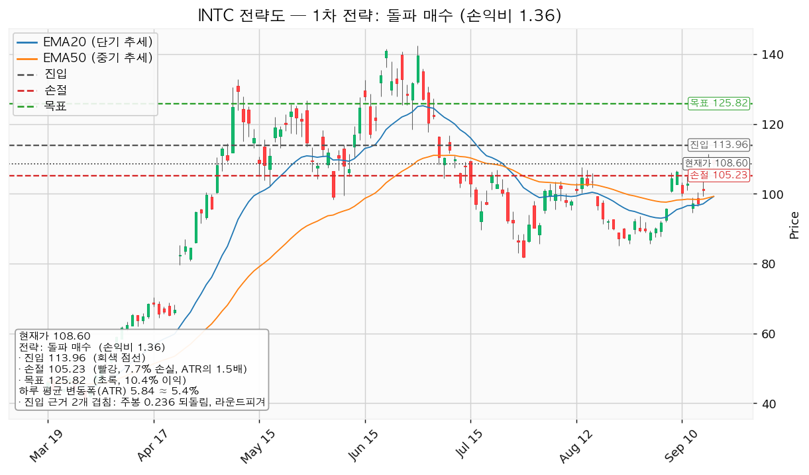
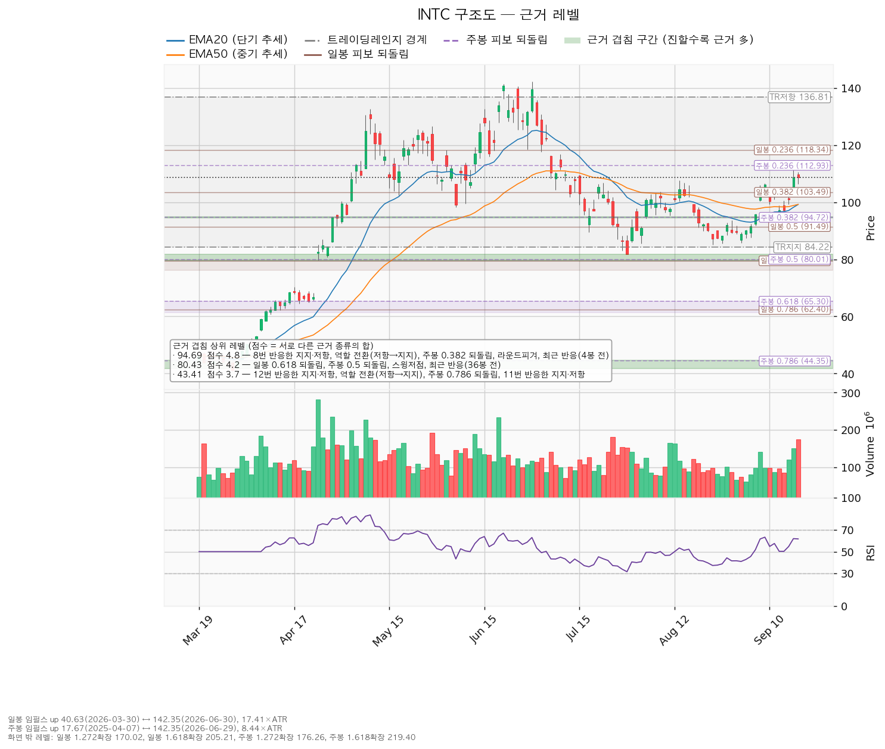
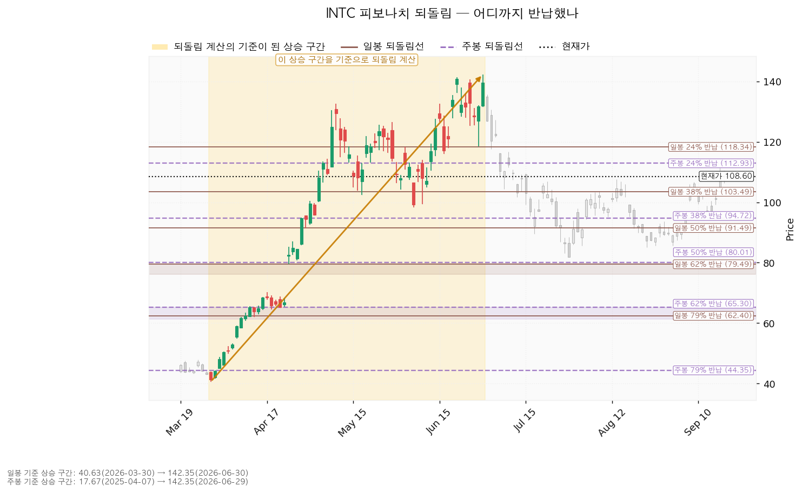
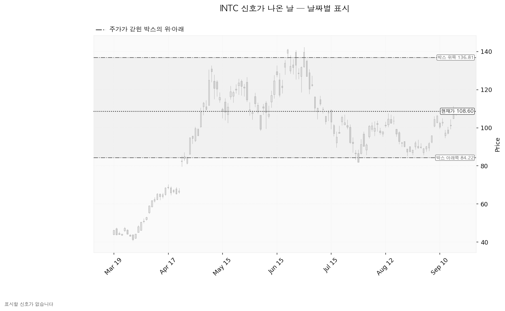

인텔(INTC)은 PC·서버용 x86 중앙처리장치를 설계·제조하고, 외부 고객의 칩을 위탁생산하는 파운드리 사업을 함께 운영하는 미국 반도체 기업입니다.
| 구분 | 가격 | 판정 방식 | 현재 대비 | 상태 |
|---|---|---|---|---|
| 회복선(진입 조건) | 113.96달러 | 일봉 종가로 회복 후 되돌림에서 지지 | +4.94% | 회복 대기 |
| 집행 손절 | 105.23달러 | 저가 터치 (진입한 경우에만 유효, 미진입 시 무의미) | -3.10% | — |
| 관망 종료 기준 | 102.40달러 | 일봉 종가 이탈 → 이 리포트 매수 계획 종료, 새 리포트 대기 | -5.71% | 유지 중 |
| 확인선 | 136.81달러 | 일봉 종가 돌파 후 되돌림 지지 확인 (박스 상단과 같은 가격) | +25.98% | 미돌파 |
| 폐기선(구조) | 84.22달러 | 이탈 후 3거래일 내 회복 실패, 또는 그 전 78.38달러 아래 종가 + 반등에서 저항 확인 | -22.45% (4.17 ATR) | 유지 중 — 실무상 작동하지 않음 |
| 항목 | 값 |
|---|---|
| 셋업 | 돌파 매수(breakout_long) · 구조 증명도 돌파 확인형(가중치 1.0) |
| 진입 | 113.96달러 — 근거 2개 겹침(2.1점): 주봉 0.236 되돌림 + 라운드피겨 115달러대. 겹침 구간 112.93~115.00 |
| 손절 | 105.23달러 — 겹침 구간(106.69~107.57, 2.9점) 바로 아래로 밀어낸 위치. 구간 안쪽이 아니라 그 아래에 두었으므로 손절 폭이 넓어졌고 손익비도 그만큼 낮아졌습니다 |
| 목표 | 125.82달러 (라운드피겨 125 + 스윙고점 126.64, 1.8점) 전량 청산 |
| 손익비 | 1:1.36 (손절 폭 8.73달러 = 1.49 ATR = 진입가의 7.66%) |
| 엣지 | 모멘텀 / 전제: 저항을 돌파하면 그 방향이 이어진다 / 성격: 자주 틀리고 소수가 크게 맞는 유형(유형의 일반적 성격이며 이 엔진에서 측정한 값이 아닙니다) |
대표로 고른 이유는 손익비 1.36 × 구조 증명도(돌파 확인형) × 근거 겹침 2.1점이며, 상대강도와 거래량으로 순위에 1.15배가 곱해졌습니다(지수 대비 20일 초과수익 +17.75%, 최근 5일 최대 거래량 20일 평균의 1.78배). 다른 후보인 되돌림 매수는 진입 107.13달러(근거 3개 겹침, 2.9점: 스윙고점 + 8번 반응한 가격 + 최근 반응 7봉 전) / 손절 100.94달러 / 목표 113.96달러 단일 청산에 1:1.10이며, 선취형(구조 미확인, 가중치 0.7)이라 손익비도 낮고 구조가 증명되기 전에 들어가는 자리입니다. 분할 없이 단일 목표라 본전 스탑 이동도 없습니다.
돌파 매수에는 119.17달러에서 절반·125.82달러에서 절반 청산과, 119.17달러 도달 시 잔여분 손절을 113.96달러로 올리는 본전 스탑이 함께 산출돼 있습니다. 그대로 따르면 전 구간 손익비가 1:0.98로 1을 밑돌고 T1 체결 후 본전 스탑 시의 하한은 1:0.30입니다. 집행 정책이 목표 전량 청산이므로 이 리포트는 125.82달러 단일 청산 하나만 냅니다.
손절이 이미 겹침 구간 아래(1.49 ATR)에 놓여 있어 구조적 손절을 따로 적용한 손익비는 산출되지 않았습니다 — 손절을 하루 변동폭 안으로 조여 손익비를 만든 셋업이 아닙니다. 확인선 136.81달러는 목표 125.82달러보다 위에 있으므로 125.82달러에서 전량 청산하고, 136.81달러 종가 돌파는 이 포지션의 연장이 아니라 새 셋업으로 다시 잡습니다. 장부에 인텔 체결 기록이 없어 전략도에 평단선과 체결 표시가 그려지지 않았고, 기록이 없다는 것이 미보유를 뜻하지는 않으므로 평단 대비 손익은 적지 않습니다.

| 단계 | 트리거 | 의미 | 행동 |
|---|---|---|---|
| 1 관찰 | 일봉 종가가 113.96달러 아래로 마감 | 구조 이탈 시작 — 되돌아 올라오면 속임수 하락일 수 있어 아직 무효가 아님 | 신규 진입만 중단, 집행 손절은 그대로 |
| 2 경고 | 이탈 후 3거래일 안에 113.96달러를 종가로 회복하지 못함, 또는 그 전에 일봉 종가가 108.12달러 아래로 마감(하루 평균 변동폭 1배만큼 더 밀림) — 둘 중 먼저 오는 쪽 | 박스 안으로 되돌아갈 가능성이 우세해짐 | 잔여 비중 축소, 반등 시 113.96달러에서의 반응 확인 |
| 3 무효 | 반등이 113.96달러에서 막히고 그 아래로 되밀림(지지가 저항으로 전환) | 구조 해석이 틀린 것으로 확정 | 포지션 정리 후 관망 |
집행 손절 105.23달러는 구조가 몇 단계에 있든 무관하게 작동합니다. 장중에 잠깐 가격을 내준 것은 어느 단계에도 해당하지 않습니다.
폐기선 84.22달러는 현재가에서 4.17 ATR 떨어져 있어 실무상 무효화 기준으로 작동하지 않습니다. 대신 논지 무효화는 10월 23일 실적에 겁니다 — 다음 12개월 EPS 컨센서스 2.06달러와 올해 1.52달러가 실적 후에도 유지·상향되는지, 그리고 영업현금흐름 96.97억 달러가 줄지 않는지입니다. 두 추정치가 함께 하향되면 이 리포트의 전제(배수 수축이지 사업 악화가 아니다)가 깨집니다.
상승 전환 — 113.96달러 종가 회복 후 그 위에서 지지되면 대표 셋업 진입이고, 이어 136.81달러를 종가로 넘기면 박스를 위로 벗어난 것입니다.
횡보 지속 — 84.22달러를 지키면서 136.81달러 아래 박스가 유지되는 갈래입니다. 90봉짜리 박스(84.22~136.81, 폭 9.0 ATR)가 그대로 살아 있는 상태이며, 6월 고점 142.35달러 이후 쏟아진 매물을 소화하는 데 시간이 걸리는 국면입니다. 추적 항목은 박스 안쪽 관측치 세 가지입니다 — 지지 테스트 거래량은 1.09배 → 1.31배 → 0.86배로 줄고 있고(감소), 저점은 89.59 → 81.79 → 85.14달러로 절하 판정이며, 상승봉 대 하락봉 거래량비는 0.96입니다. 저점이 절상으로 돌아서고 거래량비가 1을 넘어서면 매집 쪽 근거가 쌓입니다.
시나리오 폐기 — 84.22달러를 이탈한 뒤 3거래일 안에 종가로 회복하지 못하거나 그 전에 78.38달러 아래로 종가 마감하고, 반등에서 84.22달러가 저항으로 확인되면 폐기입니다. 박스 안에서 물량이 넘어간 국면이었다는 뜻이며 추가 저점 갱신 가능성이 열립니다.
| 가격 | 겹침 점수 | 근거 |
|---|---|---|
| 136.81달러 | 1.2 | 박스 상단 |
| 125.82달러 | 1.8 | 라운드피겨 + 스윙고점 126.64 |
| 113.96달러 | 2.1 | 주봉 0.236 되돌림 + 라운드피겨 |
| 107.13달러 | 2.9 | 스윙고점 + 8번 반응한 가격 + 최근 반응(7봉 전) |
| 103.63달러 | 3.3 | 스윙저점 102.40 + 일봉 0.382 되돌림 + 라운드피겨 + 최근 반응(7봉 전) |
| 99.20달러 | 2.8 | 스윙저점 98.33 + 20일선 + 50일선 + 라운드피겨 100 |
| 94.69달러 | 4.8 | 8번 반응한 가격 + 역할 전환(저항→지지) + 주봉 0.382 되돌림 + 라운드피겨 95 + 최근 반응(4봉 전) |
| 84.68달러 | 2.9 | 박스 하단 + 스윙저점 85.14 + 최근 반응(12봉 전) |
겹침이 가장 두꺼운 자리는 94.69달러이며, 과거 저항이던 가격이 지지로 역할이 바뀐 자리입니다. 진입 후보 113.96달러보다 방어력이 높은 가격이 아래쪽에 있다는 뜻이므로, 102.40달러를 종가로 잃으면 다음 반응은 94.69달러에서 볼 일입니다.
박스는 조회된 753봉 중 40·90·180봉을 모두 시험해 가격이 가장 잘 지켜진 90봉 창(포함도 0.967)을 고른 것입니다. 직전 구간은 41.47~58.81달러였고 거기서 위로 올라와 이 박스로 들어왔으므로, 다시 모으는 국면(매집)과 넘기는 국면(분산) 중 어느 쪽인지 아직 갈리지 않은 형태입니다. 박스 안쪽 판정은 중립입니다 — 지지 테스트마다 매도 거래량이 줄어드는 것은 매집 쪽이고, 박스 안 저점이 절하되는 것은 반대쪽이라 어느 한쪽으로 기울지 않았습니다. 사각형 모양만으로는 매집과 재분산이 같아 보이므로, 이 중립 판정이 조건 점검의 '박스 안쪽' 통과 근거이자 진입을 돌파 확인 뒤로 미룬 이유입니다.

일봉 되돌림은 3월 30일 40.63달러에서 6월 30일 142.35달러까지의 상승 구간(17.41 ATR)을 기준으로 계산했고, 현재가 108.60달러는 0.236(118.34)과 0.382(103.49) 사이에 있습니다. 즉 그 상승분의 30% 남짓만 반납한 상태입니다. 주봉은 2025년 4월 17.67달러에서 같은 고점까지의 구간이며 0.236이 112.93달러로 회복선 113.96달러와 겹칩니다.

날짜가 붙은 매집·분산 신호(속임수 하락, 강세 신호 등)는 이번 조회 구간에서 하나도 나오지 않았고 국면 판정도 특정되지 않아, 아래 신호일 차트에는 색으로 남는 캔들이 없습니다.

후행 PER은 산출되지 않습니다 — 후행 EPS가 -2.09달러로 적자이기 때문입니다. 선행 PER은 52.67배이며, 올해 EPS 컨센서스 1.52달러(성장률 +262.0%)에서 내년 2.06달러(+35.6%)로 이어지는 이익 회복을 담고 있습니다. 목표주가는 애널리스트 43명 평균 116.37달러, 최저 75.00달러, 최고 200.00달러이고 현재가 108.60달러는 평균과 최저 사이에 있습니다(전원의 목표 아래는 아닙니다). 투자의견은 매수입니다.
최근 60일 지수 대비 -21.48%의 하락은 배수 수축이지 사업 악화가 아닙니다 — 같은 기간 내년 EPS 컨센서스는 90일 동안 +35.3%, 올해분은 +39.4% 올랐습니다. 다만 최근 30일치는 각각 +1.1%, +0.5%로 상향이 거의 멈췄습니다. 90일간의 상향은 대체로 값에 반영될 시간이 있었고 지금 진행 중인 추가 상향은 크지 않으므로, 배수가 다시 붙을 계기는 10월 23일 실적 외에는 이 자료로 댈 수 없습니다.
잉여현금흐름은 -49.49억 달러지만 영업현금흐름은 +96.97억 달러입니다(2025년 12월 31일 결산 기준). 영업에서 현금이 나가는 적자가 아니라 설비투자 146.46억 달러가 앞선 형태이며, 설비투자는 전년 239.44억 달러에서 -38.8% 줄었습니다. 그 투자가 이익으로 돌아오는 속도가 확인 항목입니다. 상승 여력의 출처는 배수 확장입니다. 평균 목표 116.37달러는 내년 EPS 2.06달러 기준 56.4배로, 현재 선행 52.7배에서 배수가 3.8배 벌어지는 그림입니다(이익 추정치는 같은 값). 이 리포트의 목표 125.82달러는 같은 EPS 기준 61.0배이며, 여기에도 이익 증가분은 들어 있지 않습니다. 컨센서스는 12개월 시계이고 이 셋업은 수 주 시계이므로 결론이 달라도 모순은 아닙니다.
| 날짜 | 이벤트 | 볼 것 |
|---|---|---|
| 2026-10-23 | 3분기 실적 | 올해 EPS 1.52달러·내년 2.06달러 추정치의 유지 여부, 영업현금흐름, 설비투자 회수 진척 |
다음 실적 이후 구간의 역풍(비용 반영 예정 항목, 종료가 예고된 일회성 이익, 기저가 높은 비교 분기)은 확인할 자료가 없습니다.
1회 매매 손실 한도를 계좌의 1.0%로 두면 손절 폭 7.66%에서 포지션은 계좌의 13.0%가 됩니다 — 한 종목 상한 13%와 같은 값이라 그대로 씁니다. 계좌 잔고가 등록돼 있지 않아 금액으로는 환산하지 않습니다. 도구 적합성은 문제없습니다 — ATR 5.84달러는 주가의 5.4%로 8% 기준 아래이고 손절 폭이 1.49 ATR이라 하루 변동폭보다 넓습니다.
최종 판정은 조건부 대기입니다. 손익비 1:1.36(손절 폭 1.49 ATR)은 1을 넘지만, 조건 점검 7/9에서 미달한 이동평균 정배열(20일선 99.22가 50일선 99.26 아래)과 상대강도선 신고가가 아직 채워지지 않았습니다. 113.96달러를 일봉 종가로 넘기면 두 항목 중 정배열은 자동으로 따라붙습니다. 현재가 108.60달러에서 미리 진입하지 않습니다.
ATR: 하루 평균 변동폭. EMA: 지수이동평균(최근 가격에 가중치를 더 준 이동평균선). RSI: 0~100 사이로 표시하는 과열·침체 지표. EPS: 주당순이익. PER: 주가를 주당순이익으로 나눈 배수. 되돌림(피보나치): 상승분 중 얼마를 반납했는지 보는 가격선. 속임수 하락(spring): 지지선을 잠깐 아래로 뚫었다가 곧바로 되돌아 올라오는 움직임.